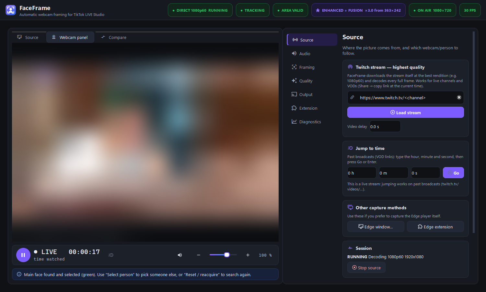
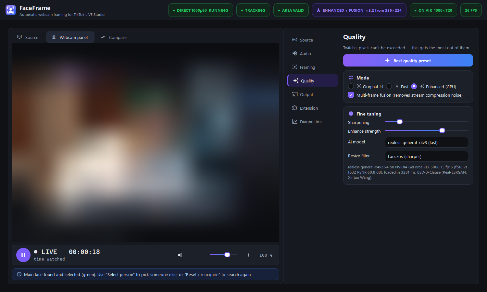
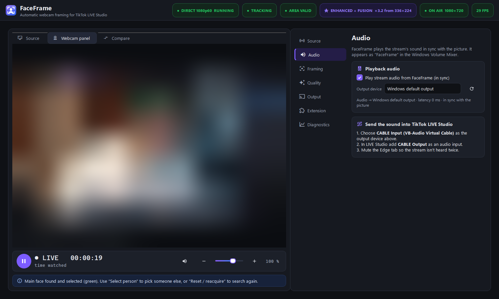
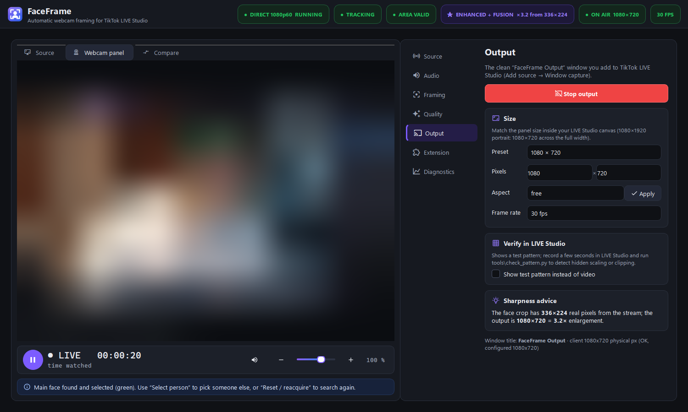
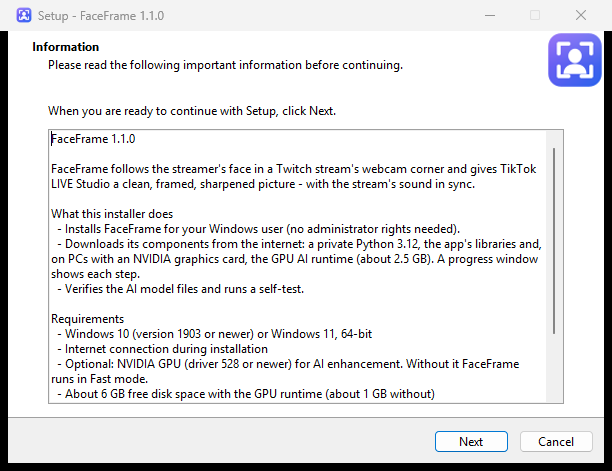

FaceFrame follows the face in a Twitch stream's webcam corner, decodes Twitch's full 1080p60 picture, cleans and sharpens it with your GPU, and hands TikTok LIVE Studio a clean window — with the sound in sync.
Download for Windows
Every quality step was measured on real Twitch streams — nothing is promised that the pixels can't deliver.
Paste a Twitch link (live or past broadcast). FaceFrame decodes the best rendition itself — independent of the browser player size.
Follows the streamer smoothly with head-and-shoulders framing, never jumps to posters or other faces.
Multi-frame fusion removes compression noise, Real-ESRGAN sharpens — about 12 ms per frame on an RTX GPU.
Plays the stream's audio lip-synced to the picture; shows up as “FaceFrame” in the Windows Volume Mixer.
Pause/resume, volume, position, length and remaining time for past broadcasts.
When a new version is out, FaceFrame offers it at start: Update now or Skip. No re-downloading.
A pixel-exact “FaceFrame Output” window for LIVE Studio's Window capture — no buttons, no borders.
The installer sets everything up automatically — including the GPU AI runtime on NVIDIA PCs.
Stream content is blurred in these images; in the app you see the real picture.




| Windows | Windows 10 version 1903 or newer, or Windows 11 (64-bit) |
|---|---|
| GPU (optional) | NVIDIA with driver 528+ for AI enhancement. Without it FaceFrame runs in Fast mode at full stream quality. |
| Disk | About 6 GB with the GPU runtime, about 1 GB without |
| Internet | Needed during installation and to watch streams |
| For LIVE Studio sound | VB-Audio Virtual Cable (free) |